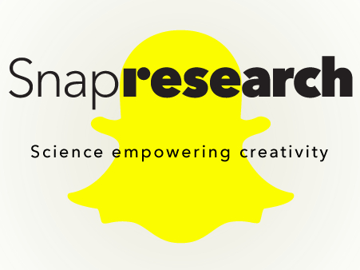
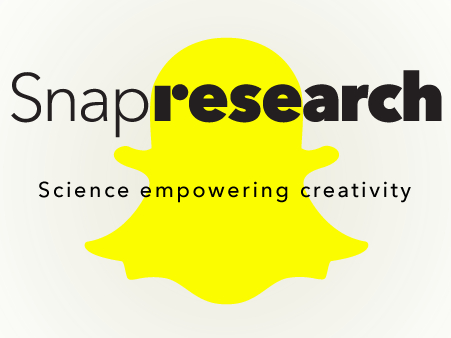

Welcome to Deep Robust & Explainable AI Lab!
Deep-REAL is a research lab affiliated with the Department of Computer and Information Sciences (CIS), Data Science Institute (DSI), and Delaware Environmental Institute (DENIN), all at the University of Delaware.
We work in the area of Deep Learning, Machine Learning, and Computer Vision, with a special interest in two directions:
- Data-intensive scientific machine learning
- Human-centered computer vision
Our mission is to develop flexible, reliable, and explainable AI models, upon which cross-disciplinary research can advance synergistically.
We are publishing in top-ranked conferences (NeurIPS, ICLR, CVPR, ICCV, ECCV, AAAI, IJCAI, KDD), leading journals (TPAMI, TIP, IJCV, THMS), as well as US patents. Our current research received awards and supports from NSF, CDC, Google Research, Snap Research, and multiple internal sponsors.


 
